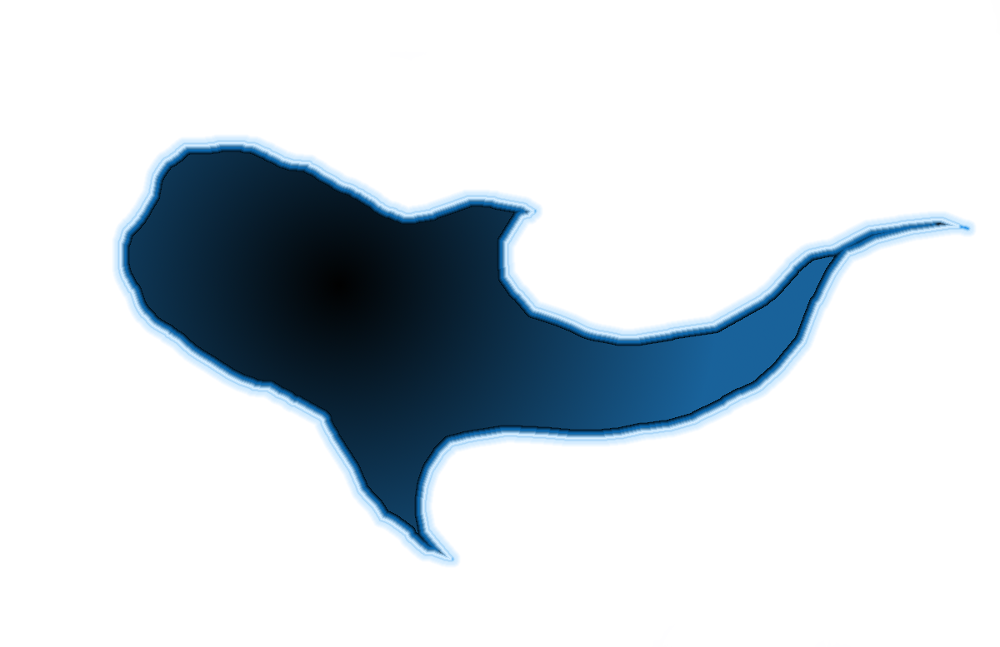

A nano-economic sustainable financial solution for monetizable properties.
Whale Shark is a sustainable income-producing web property built on a nano-budget by utilizing a minimum risk portfolio in decentralized finance.
Whale sharks are the largest fish in the oceans. They sustain their amazing size by means of filter feedings, the process of filtering water in order to capture many small food particles suspended in their environment as they swim. Conceptualy using small capital gains (food) to fuel carefully managed nano-budget expenses (swimming) to create a financial entity that sustains itself without the expense of capital. This foundation for monetizable properties gives new investors a loss risk opertunity to create a passive income.
On this the 17th of May in the horrible year of 2020 I embark into the oceans of finance to study an entity of sustainability and effeciency. The beatiful whale shark project awaits in the unknown depths of economics.
About The Project
2020 Xreddr